A settembre 2013 ho fatto una presentazione delle mie foto al circolo fotografico di San Donato. Ero parte del circolo da un anno, e mi pareva una cosa da fare sia per contribuire alla vita del circolo, sia per mettere alla prova del pubblico alcune delle mie foto. L’obiettivo era di raccontare brevemente da dove venissi, fotograficamente parlando, e mostrare alcune delle foto più care o dotate di una qualche qualità che potesse essere apprezzata anche da altri. Non ho fatto una presentazione appariscente, non c’erano effetti o transizioni speciali né una colonna sonora; ci ho parlato su, cercando di collegare con una narrativa i gruppi di foto che avevo scelto. Anche se difficile riportare per scritto quella che avevo pensato come esposizione orale, ci provo, anche per fermare nel tempo il mio primo ‘outing’ fotografico.
La prima parte si trova qui: Presentazione Circolo Fotografico, parte 1.
street
Questo è il genere che più mi intriga, anche se il più inflazionato1.
Queste sono foto scattate nel 1998 a NY, e sono indubbiamente “street photography” ma allora manco sapevo che esistesse un genere street.
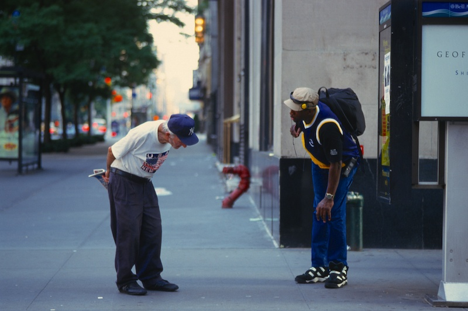
Baseball cap, New York, Nikon F70, 35mm f/2, Fuji Sensia 100.

Ritratto, New York, Nikon F70, 35mm f/2, Fuji Sensia 100.
Queste invece sono foto più recenti scattate a Pechino, e mi chiedo — cosa sono queste: street o viaggio o documentario?
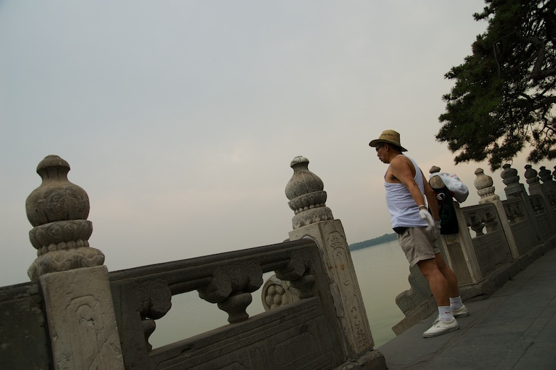
Cantante, Beijing, Nikon D70s, Sigma 17-70mm f/2.8-4.5.
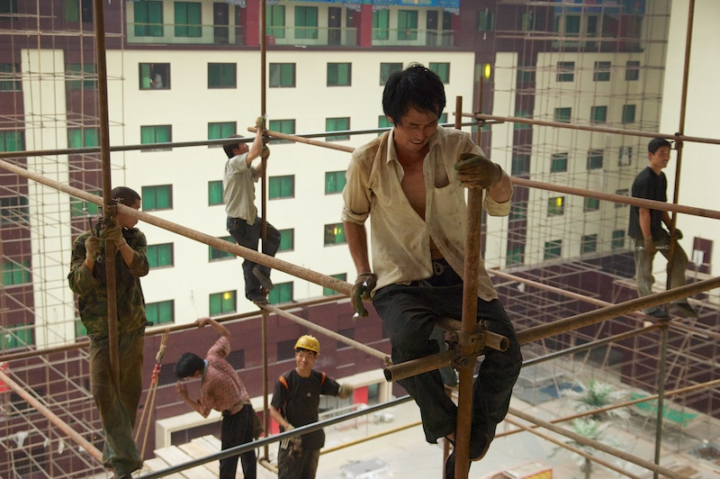
Operai al lavoro, Beijing, Nikon D70s, Sigma 17-70mm f/2.8-4.5.
Il “problema” della street photography sono questi labili confini che rendono possibile escludere o includere qualsiasi cosa. Senza farmi troppi problemi di categorizzazione, io tendo a includere tutte le foto in ambiente urbano, a prescindere dalla presenza di persone. Anche se la presenza di elemento umano rende sempre più forte l’immagine, non la considero un requisito indispensabile; anzi sono sempre alla continua ricerca di fotografie efficaci che riescono a fare a meno di questo elemento.
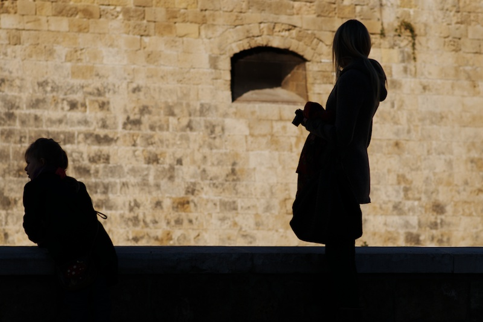
Mamma/1, Bari: Castello Svevo, Nikon D7000, 85mm f/1.8G.

Mamma/2, Berkeley, Nikon D700, 180mm f/2.8.
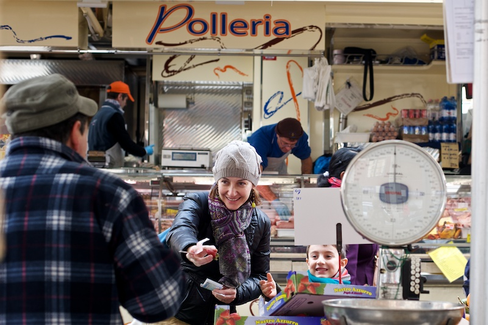
Mamma/3, Milano, Nikon D600, 50mm f/1.4.

Riflesso di mia figlia che sorride alla signora, Spazio Oberdan, Milano, Nikon D600, 85mm f/1.8G.

Rosso, Milano, Nikon D7000, Nikkor-H 85mm f/1.8.
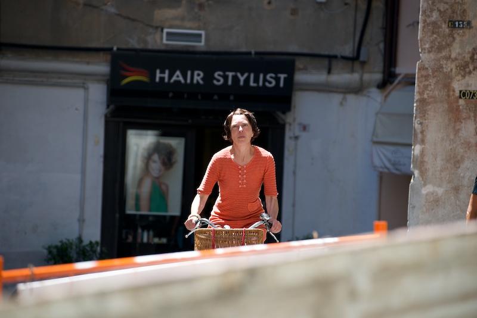
Bicicletta/1, Genova, Nikon D600, 70-300mm f/4.5-5.6G.

Bicicletta/2, Milano, Nikon D600, 50mm f/1.4.
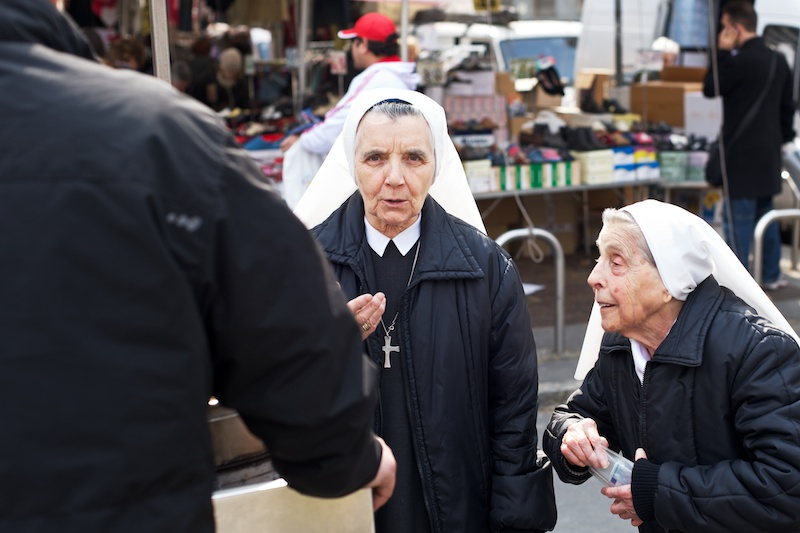
Suore, Milano, Nikon D600, 50mm f/1.4.

Duomo, Milano, Nikon D600, 50mm f/1.4.
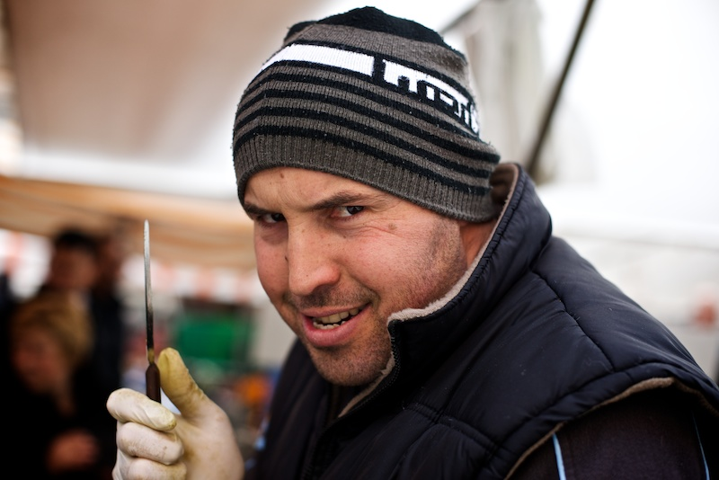
Ritratto posato, Milano, Nikon D600, 50mm f/1.4.
 Ritratto non posato, Milano, Nikon D600, 50mm f/1.4.
Ritratto non posato, Milano, Nikon D600, 50mm f/1.4.

Birra/1, Milano, Nikon D600, 85mm f/1.8G.
 Birra/2, Milano, Nikon D600, 85mm f/1.8G.
Birra/2, Milano, Nikon D600, 85mm f/1.8G.

Verde, Genova, Nikon D600, 70-300m f/4.5-5.6G.
paesaggi
Termino qui con un classico del fotoamatore: paesaggi. Una categoria in cui trovo altrettanto difficile incasellare le mie foto, forse più che non con la street photography.
Ho sentito una volta parlare di landscape photography come un analogo di weather photography, perché in realtà è tutta un inseguire o attendere le condizioni atmosferiche giuste per avere luce ottimale (calda, obliqua) e magari quella nuvolaglia fotogenica che rende un paesaggio drammatico e temperamentale.
A volte però ti trovi in un posto da cartolina nel bel mezzo della giornata, col classico sole a picco che tutti gli esperti rifuggono inneggiando alle calde luci dell’alba o del tramonto; ma tu sei lì, e fai quello che puoi sfruttando il materiale sottomano, perché non tutti noi siamo dei Galen Rowell che possono stare giorni interi fuori all’aria aperta aspettando la luce giusta.

Laghi di Colbricon, Parco Naturale di Paneveggio: ore 13:35, Nikon D600, 50m f/1.4.
I paesaggi possono essere anche quelli banali della campagna piacentina, dove magari si intravede una qualche geometria che ispira:
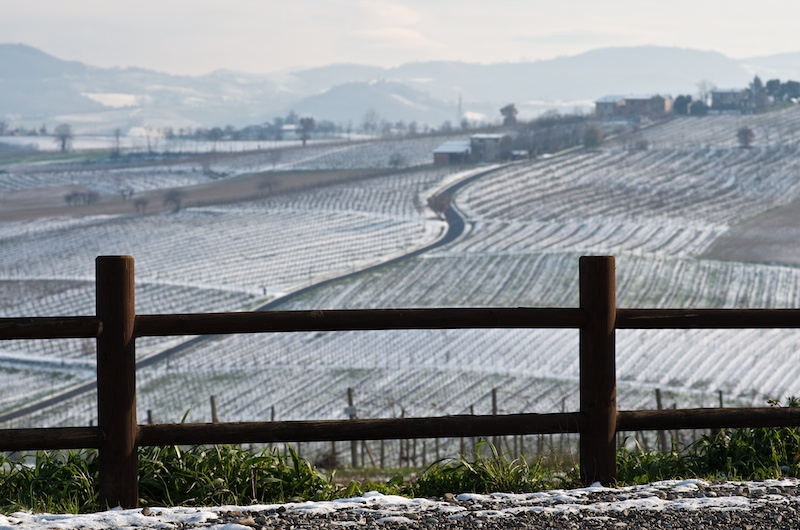
Esse, Ziano Piacentino, Nikon D7000, Nikkor-H 85mm f/1.8.
Puoi trovare la classica vetta che vedi da tutti gli angoli e conosci a memoria, e sai che è tanto impressionante che non riuscirai mai a catturarla nella sua interezza, e allora magari rigirandoti durante un’escursione in bici ti accorgi di un punto di vista inedito:

Cimon della Pala, Nikon D600, 85m f/1.8G.
Estremizzando la propria interpretazione, mi azzardo a dire che si può essere in città e fare comunque foto di paesaggi:

Bari, Nikon D7000, 35mm f/1.8G.
Sempre sul tema dell’interpretazione personale di una certa categoria, io ho difficoltà onestamente a capire dove finisce un paesaggio e dove inizia il dettaglio; il solito problema delle categorie, e vai a capire in che casella devi mettere una cosa come questa:
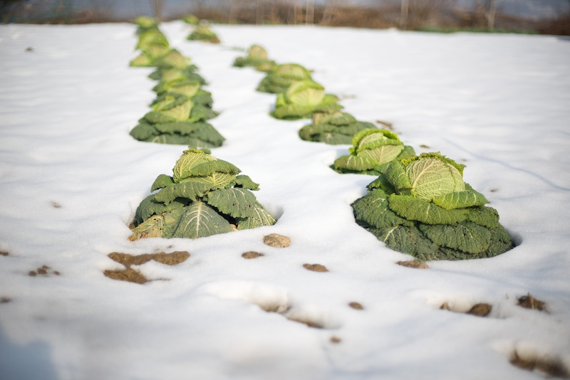
Montevecchia, Nikon D600, 50m f/1.4.
I paesaggi presuppongono l’assenza di persone? Esattamente come la street photography richiede la presenza di persone? Galen Rowell è famoso perché il più delle volte si metteva lui come protagonista delle sue foto naturalistiche, per dare un senso di scala e per coinvolgere lo spettatore.
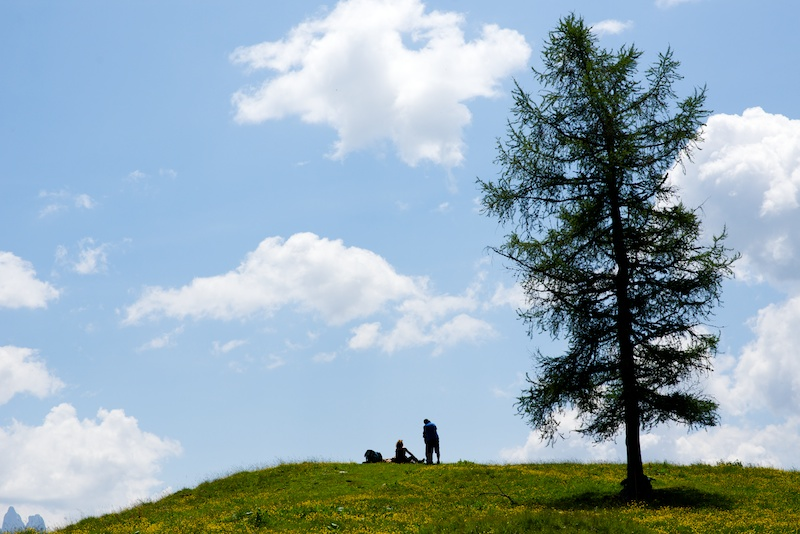
Picnic, Malga Bocche, Parco Naturale di Paneveggio, Nikon D600, 85m f/1.8G.
Anche qui, è facile cadere preda della tentazione di scombussolare il genere e sostituire le persone con delle mucche:

Mucca/1, Malga Bocche, Parco Naturale di Paneveggio, Nikon D600, 85m f/1.8G.
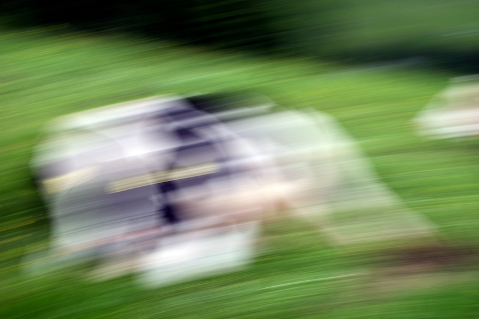
Mucca/22, Latemar, Nikon D600, 85m f/1.8G.
Spesso però, adesso come vent’anni fa quando ho preso la mia prima reflex in mano, mi sento come questo ragazzo, che guarda ancora il mare con aria sognante, e la fotografia mi aiuta ogni giorno a guardare il mondo attorno a me con occhio fresco e pieno di attese per quello che verrà:

Maputo (Mozambico), Nikon D600, 85m f/1.8G.
-
Per alcuni miei pensieri riguardo la street photography, vedi anche questi altri articoli: fotografia di strada, On sloppy street photographers, Street photography workshop, Getting close in street photography, Only two street photos. ↩
-
Questo è un esperimento di una cosa che ci si azzarda a fare solo col digitale dove sprecare scatti non costa niente. La tecnica viene chiamata ICM, cioè Intentional Camera Movement, per distinguere le foto in cui ti viene il “mosso” perché sei una capra a fotografare. Indubbiamente i risultati sono interessanti e hanno un che di pittorico che può piacere. La tecnica è quella sostanzialmente di sparare nel mucchio — a volte va bene a volte no. Per me la fotografia è intenzionale e non casuale. Tuttavia approcci diversi, facili da provare come questo, a volte ti rinfrescano la mente e ti stimolano a guardare al di là dei soliti schemi. ↩